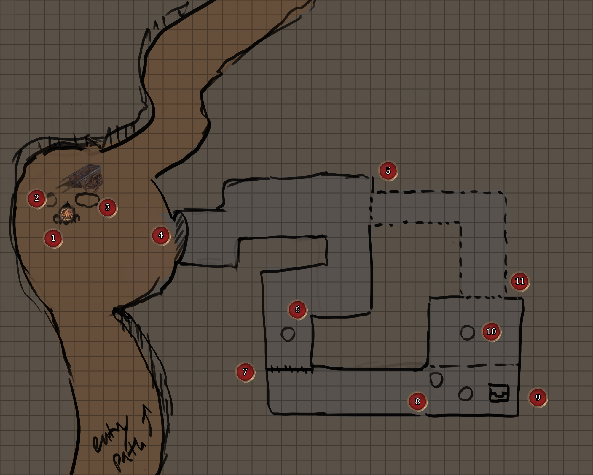
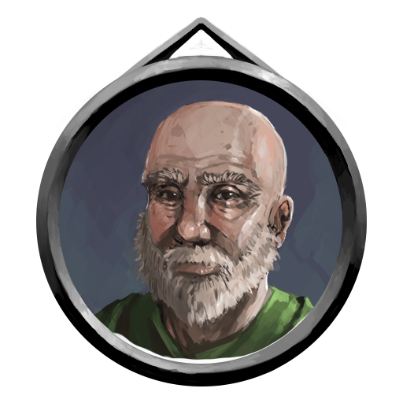
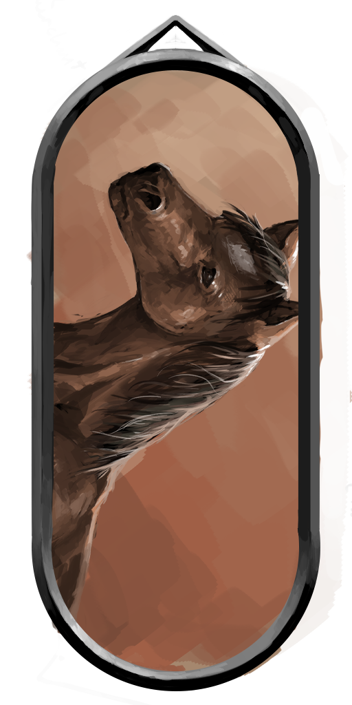
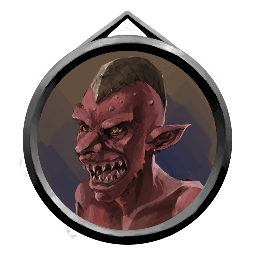
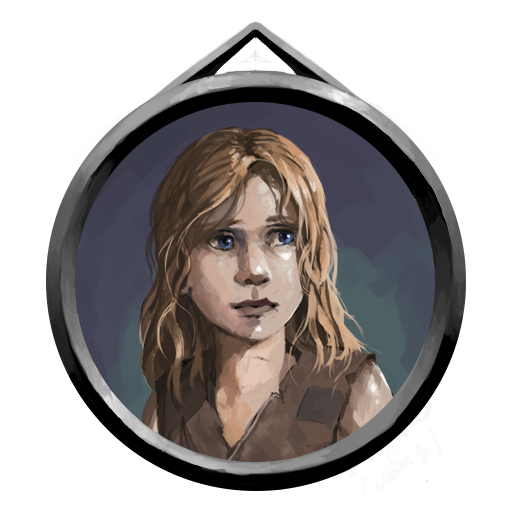

THE PASS OF RADELL
Game Master
-Map : Pass of Radell Pathway-
LOCATION : LEGARA, KARTHIA || FORAGE DC : 9

1. Campfire/Cart
The campfire is the first thing the players would see as it flickers in the night and its light illuminates the clearing.. A horse-drawn cart is behind it, having stopped in the clearing and a human sits on a log laid beside the fire.
SPOT CHECK | DC : 4
It would seem that the cart has broken down, one of its wheels having been
splintered and hacked apart. The cart itself seems to be carrying trade goods,
although those with a good eye will note that the goods have been ransacked
and quite a few of the linen bags are torn open.
TRACK CHECK | DC : 5
There are larger tracks, inhuman and while smaller than human tracks, definitely
has a humanoid feel. This can then lead to a knowledge nature/geographical check
of DC : 5, to note that they are kobolds.
2. Old Merchant - Olfred Vendal
Olfred Vendal is an old Karthian travelling merchant who had taken the Pass of Radell to move to the next town over and continue his ambling ways. Typical to most humans, he is weary of the Pass, but does not believe in inhuman creatures, nor their having taken residence in the caves, that is until he and his daughter were attacked by a group of kobolds.
GENERAL ATTRIBUTES
| AGE | HEIGHT | WEIGHT | SIZE |
| 52 | 5'09" | 144 lbs | 1x1 Medium |
ABILITY SCORES
| STR | CON | AGI | DEX | INS | INT | WILL | WIS | CHA | BEA |
| 5 | 6 | 6 | 6 | 5 | 7 | 6 | 7 | 7 | 6 |
MOVEMENT
| RUNNING | CLIMBING | SWIMMING | FLYING |
| 5 Perfect | 2 Rough | 2 Rough | - - |
SIGHT DISTANCE THRESHOLDS
| DAYLIGHT | PARTIAL LIGHT | DARKNESS |
| - Fine | 5 Strained | - Blind |
COMBAT ABILITY
| WOUNDS | INITIATIVE | ATTACK | MIGHT | DODGE | PARRY | DAMAGE | NAT. ARMOUR | PRESENCE |
| 6 | 12 | 5 | 5 | 5 | 2 | 1 | 2 | 5 |
NATURAL WEAPONS
| WEAPON | TYPE | MIGHT | DAMAGE | ADDITIONAL |
| Punch/Kick | Primary | -2 | +0 | Non-lethal |
HELD WEAPONS
| WEAPON | TYPE | MIGHT | DAMAGE | ADDITIONAL |
| Copper Dagger | Primary | +0 | +2 | - |
SPOT CHECK | DC : 4
Those who pass this check will Olfred seems very distraught, gripping his head
and staring blankly into the fire as his mind seems to be panicking.
If the players decide to speak to Olfred, he'll shakily welcome them to the fire as long as they are human. As with most Karthians/humans, he is very superstitious and will be ever more weary the more inhuman the player is. (This does include more common inhumans such as falgrii, runnoc and so on.) Once questionned he'll answer that he and his daughter were ambushed by small creatures of reddish skin with long arms, floppy ears and sharp teeth.
KNOWLEDGE : NATURE | DC : 5
The creature is known as a kobold.
He'll then beg the players to rescue his daughter, and if possible to regather his goods. If asked for payment he'll try to bargain his way out, being a merchant at heart, first offering goods such as rations, and the rest of his stock if pushed or intimidated. If asked to join the players, he'll pale and refuse but can be inspired to join if it is a critical success. Olfred will also sell torches to players who ask for them, but can be easily convinced to give them for free.
GOODS FOR SALE
| Item | Size | Weight | Cost | Description + Additional Rules |
|---|---|---|---|---|
| 5 - Bandage (5) | Small | 0.1 lbs | 1 cp | Bandages are cloth straps used to cover wounds and halt bleeding or infections. Using a bandage gives a +1 bonus to the user's heal check. |
| 2 - Fishing Rod | Standard | 2 lbs | 3 cp | A simple stick with a string attached at the end, allowing the user
to fish in waters. Gives +1 to forage checks while near waters.
Metal Components : Each greater quality gives an additional +1 to the roll. |
| 2 - Flint and Steel | Small | 0.1 lbs | 2 cp | A small kit of steel and an easily chipped rock that allows the user to creates sparks. |
| 10 - Food Ration (1 day) | Small | 1 lbs | 2 cp | A small pouch's worth of dried non-perishable food. Often salted meat, nuts and long-lasting berries. Removes 3 hunger counters. |
| 3 - Soap (3) | Tiny | 0.1 lbs | 1 cp | A block of mushed herbs, salt and animal oils used to keep clean. It can be used as a basic writing tool if absolutely needed. |
| 5 - String (10 ft.) | Tiny | - | 1 cp | Small, light string that on its own cannot really carry any weight |
| 4 - Torch | Standard | 3 lbs | 1 cp | Simple wooden handled sticks with cloth wrapped around the top that light up to a 60 foot area around the user. |
| 2 - Copper Whistle | Tiny | 0.1 lbs | 2 cp | A small crafted whistle that can be heard within 1 kilometer. |
Upon the rescue of his daughter, Olfred will give the players 2 silver pieces each, if his goods are returned to him fully. If things are missing, he won't comment on it, but instead of will give 1 silver piece to each player.
3. Horse
A brown, mid-aged horse is attached to the cart and seems to be calm. Its ears are still twitching a bit, catching nearby sounds. It will react passively to any humanoid player character, but can be easily frightened by predatory creature player characters.
GENERAL ATTRIBUTES
| AGE | HEIGHT | WEIGHT | SIZE |
| ~2-7 | ~6'05" | ~1,200 lbs | 1x2 Medium |
ABILITY SCORES
MOVEMENT
| RUNNING | CLIMBING | SWIMMING | FLYING |
| 9 Perfect | - - | 3 Rough | - - |
SIGHT DISTANCE THRESHOLDS
| DAYLIGHT | PARTIAL LIGHT | DARKNESS |
| - Fine | 5 Strained | - Blind |
COMBAT ABILITY
| WOUNDS | INITIATIVE | ATTACK | MIGHT | DODGE | PARRY | DAMAGE | NAT. ARMOUR | PRESENCE |
| 8 | 9 | 5 | 9 | 5 | 3 | 3 | 2 | 7 |
NATURAL WEAPONS
| WEAPON | TYPE | MIGHT | DAMAGE | ADDITIONAL |
| Hooves | Primary | +1 | +1 | - |
Players with animal affinities can effectively hire the horse to help the players should any combat occur, otherwise it'll simply stay at the camp. If the players somehow bait the kobolds out of the cave, the horse will at charge them.
4. Cave Entrance
The cave's entrance is eerie and while it is wide, it is rather small and requires creatures of medium size to crawl into and for creatures of large or large needing of break their way through somehow. Little light passes through this small opening.
5. Secret Passage
Spot Check DC : 7 | Listen Check DC : 6
Blended into the rocks is a thin crack that reveals itself to be an alternate
route and a direct passage to the kobold's prison. Soft sounds of a woman
sobbing can be heard through. (This is the merchant's daughter.)
6. Kobold Guard
A singluar male kobold guards the entry way, an iron barred gate shut behind him. He holds the key to the gate, and if engaged directly will call upon his two allies further down.
GENERAL ATTRIBUTES
| AGE | HEIGHT | WEIGHT | SIZE |
| 8-15 | ~3'06'' | ~60 lbs | 0.5x0.5 Small |
ABILITY SCORES
| STR | CON | AGI | DEX | INS | INT | WILL | WIS | CHA | BEA |
| 4 | 4 | 6 | 5 | 7 | 4 | 4 | 3 | 4 | 3 |
MOVEMENT
| RUNNING | CLIMBING | SWIMMING | FLYING |
| 5 Perfect | 3 Good | 2 Rough | - - |
SIGHT DISTANCE THRESHOLDS
| DAYLIGHT | PARTIAL LIGHT | DARKNESS | |||
| 10 Blurred | 6 Strained | 20 Blurred |
|||
COMBAT ABILITY
| WOUNDS | INITIATIVE | ATTACK | MIGHT | DODGE | PARRY | DAMAGE | NAT. ARMOUR | PRESENCE |
| 4 | 11 | 6 | 4 | 6 | 2 | 1 | 1 | 4 |
NATURAL WEAPONS
| WEAPON | TYPE | MIGHT | DAMAGE | ADDITIONAL |
| Claws | Primary | +0 | +1 | - |
| Bite | Secondary | +0 | +1 | Agility based attacks only |
HELD WEAPONS
| WEAPON | TYPE | MIGHT | DAMAGE | ADDITIONAL |
| Stone Dagger | Primary | +0 | 2 | Small category. |
7. Iron Gate
An iron gate bars the pathway of the tunnel. It has a rusted, but functional, lock keeping it shut. If a character has a strength value of 9 or more, they may bend/rip the bars open.
8. Kobold Guards (2)
Two more kobold guards hold the room and seem to be salivating as they look upon their female karthian prisoner. Each kobold also holds a key to the lock of the gate. They will call upon the outside guard if players appear in the hidden tunnel. The kobold outside the tunnel will take 1 turn to open the gate with the key.
9. Merchant's Goods
A few bags of basic items (to be determined) are laying upon the ground. It would seem that the kobolds took as much as they could. In addition to a coin value of 2 gold pieces, 12 silver pieces and 43 copper pieces, there are also... :
TREASURE
| Item | Size | Weight | Cost | Description + Additional Rules |
|---|---|---|---|---|
| 1 - Balm | Small | 0.5 lbs | 8 cp | Balms are special mixtures of herbs in an oinment form that is especially good at curing wounds. Using a balm grants +5 to the user's next heal check. |
| 4 - Bandage (5) | Small | 0.1 lbs | 1 cp | Bandages are cloth straps used to cover wounds and halt bleeding or infections. Using a bandage gives a +1 bonus to the user's heal check. |
| 10 - Food Ration (1 day) | Small | 1 lbs | 2 cp | A small pouch's worth of dried non-perishable food. Often salted meat, nuts and long-lasting berries. Removes 3 hunger counters. |
| 3 - Torch | Standard | 3 lbs | 1 cp | Simple wooden handled sticks with cloth wrapped around the top that light up to a 60 foot area around the user. |
| 1 - Net | Large | 2 lbs | 2 cp | A weave of thick string or hemp that can be used to entangle a target. You may use it to roll a tackle roll for grappling from a distance of 15 feet as a standard action with your ranged attack value. |
| 3 - Pouch | Small | - | 2 cp | Pouches are smaller container usually worn on the hip or attached to a belt. It can contain up to a maximum of 3 small items, but these can be reached with a swift action instead of a standard action. |
| 1 - Steel Skeleton Key | Tiny | 1 lbs | 7 gp 50 cp | Skeleton keys are modifiable key like devices that help the user pick
locks or disable traps, giving a +5(steel) bonus to any such rolls. |
10. Old Merchant's Daughter/Prison
A karthian child by the name of Sasha Vendal is sitting alone in the cave and is sobbing, otherwise unmoving. Her clothes are torn and she has many visible cuts and bruises.
GENERAL ATTRIBUTES
| AGE | HEIGHT | WEIGHT | SIZE |
| 9 | 4'03" | 76 lbs | 1x1 Medium |
ABILITY SCORES
| STR | CON | AGI | DEX | INS | INT | WILL | WIS | CHA | BEA |
| 4 | 4 | 5 | 5 | 5 | 5 | 4 | 5 | 5 | 6 |
MOVEMENT
| RUNNING | CLIMBING | SWIMMING | FLYING |
| 5 Perfect | 2 Rough | 2 Rough | - - |
SIGHT DISTANCE THRESHOLDS
| DAYLIGHT | PARTIAL LIGHT | DARKNESS |
| - Fine | 5 Strained | - Blind |
COMBAT ABILITY
| WOUNDS | INITIATIVE | ATTACK | MIGHT | DODGE | PARRY | DAMAGE | NAT. ARMOUR | PRESENCE |
| 4 | 10 | 5 | 4 | 5 | 2 | 1 | 1 | 4 |
NATURAL WEAPONS
| WEAPON | TYPE | MIGHT | DAMAGE | ADDITIONAL |
| Punch/Kick | Primary | -2 | +0 | Non-lethal |
Should players appear from either side and are no longer fighting or negotiating with the kobolds, she will run up to the humanoid character with the highest beauty. If the saving player is a creature character, she will instead back up fearfully and will need to be persuaded or forced to follow.
If she feels unafraid, she'll urge them to run away, as there were more kobolds that had attacked the cart, but she didn't see where they went.
11. Secret Passage exit
A lodged boulder is in the way with a painted red streak. It is easily moved from the inner side of the secret passage.